江门粤海·悦生活艺术馆建筑设计 / 实景摄影
切换媒介，进入我的创作视角
建筑档案
完整项目集合选择一个封面，展开它的故事。
21 组建筑项目，点击封面查看图像与项目资料。
建成
9 组项目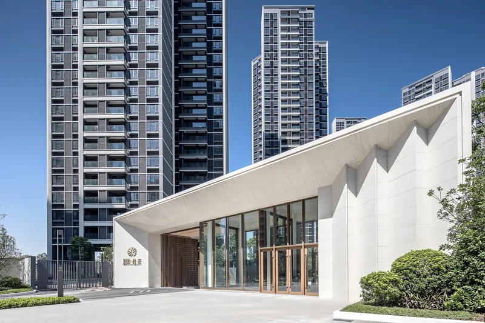
8 张江门粤海拾桂府
从住宅整体到入口近景，呈现浅色石材、深色金属与日照形成的层次。
- 8 张
江门粤海·悦生活艺术馆
红砖立面与通透玻璃连接建筑和庭院，树影、水面与材质细节构成实景选辑。
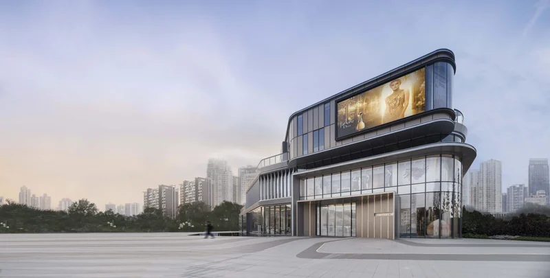
8 张广州奥园新城市天地
弧形建筑外轮廓与室内空间的实景选辑，呈现白天、黄昏和夜间的不同面貌。
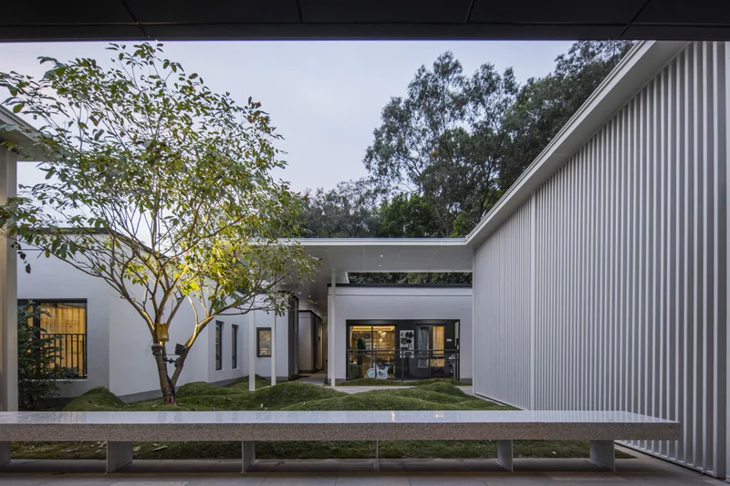
8 张万科长头湖展示区
白色墙面、细密竖向构件与庭院植物共同组织内外空间，实景照片记录光与人的尺度。
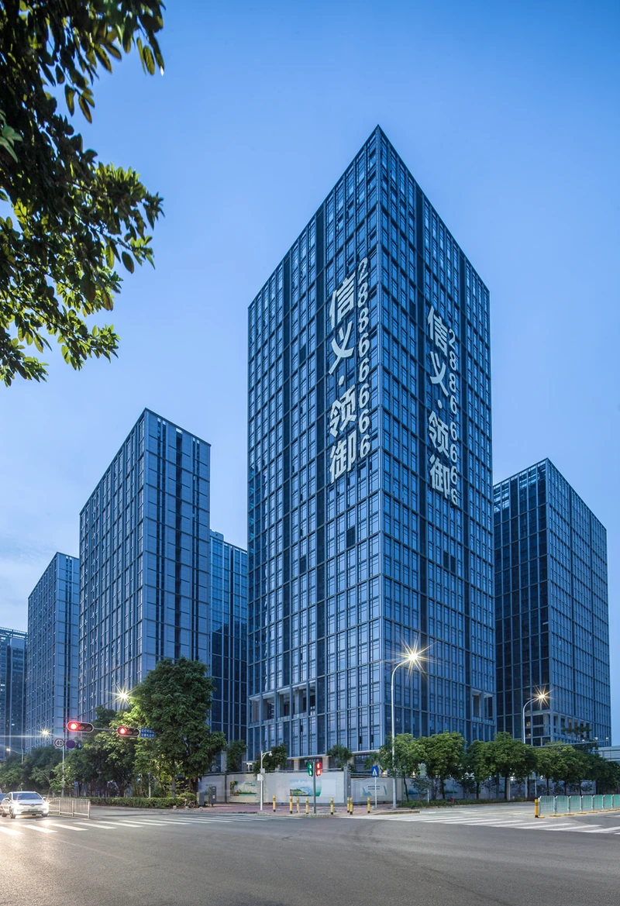
8 张信义领御研发中心
玻璃立面、临水空间与夜间内街，呈现建筑群的空间秩序。
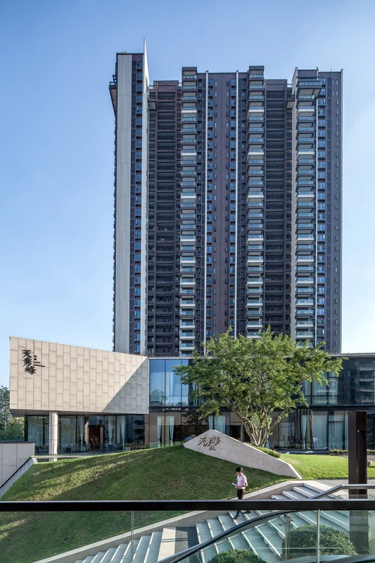
8 张广州路劲·天隽峰
以住宅立面、坡地阶梯与公共空间为线索，呈现日景与暮色下的建筑。
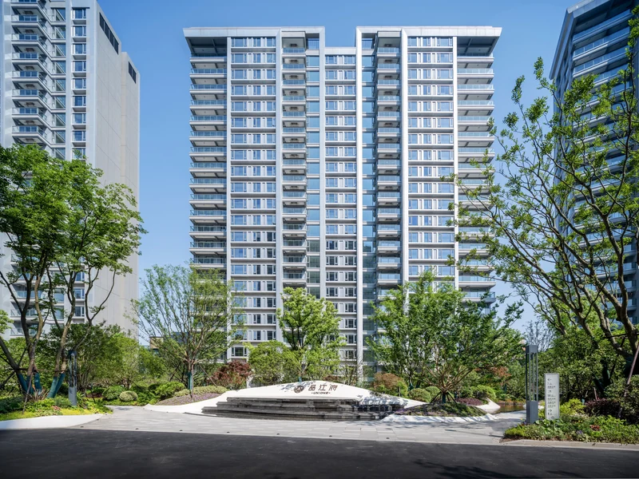
8 张中海宁波·品江府
从滨水全景到庭院、入口与立面细节，呈现住宅建筑与户外空间。
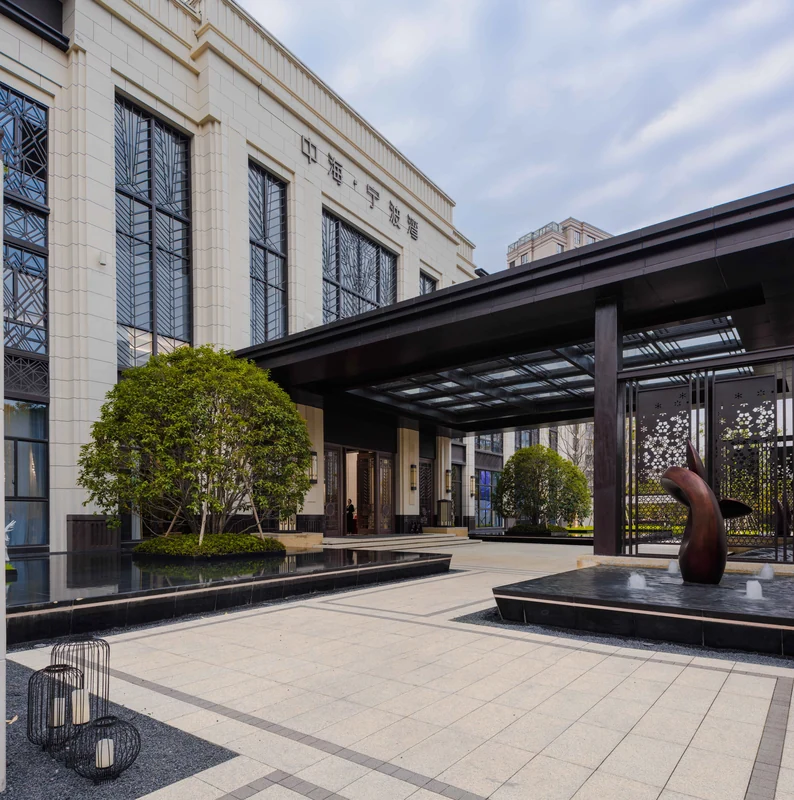
6 张中海·宁波湾售楼处
通过石材立面、入口连廊与水面，呈现白昼和夜景中的建筑与庭院。
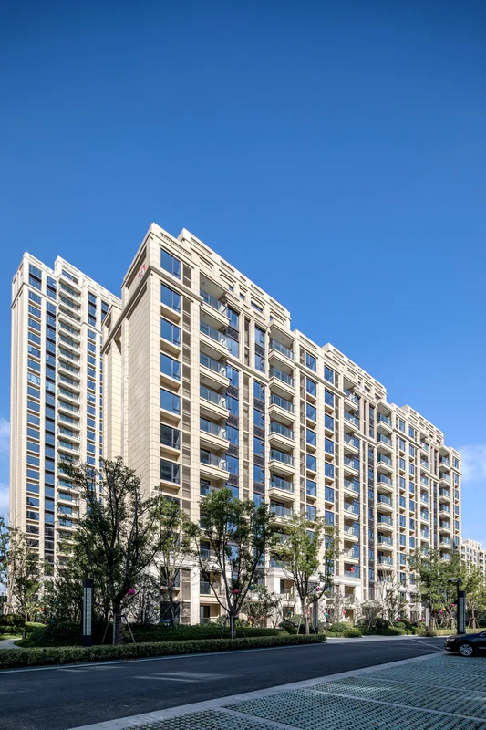
8 张中海·宁波湾
从住宅组团到入口与立面细节，呈现建筑尺度、庭院与街道的关系。
待建成
11 组项目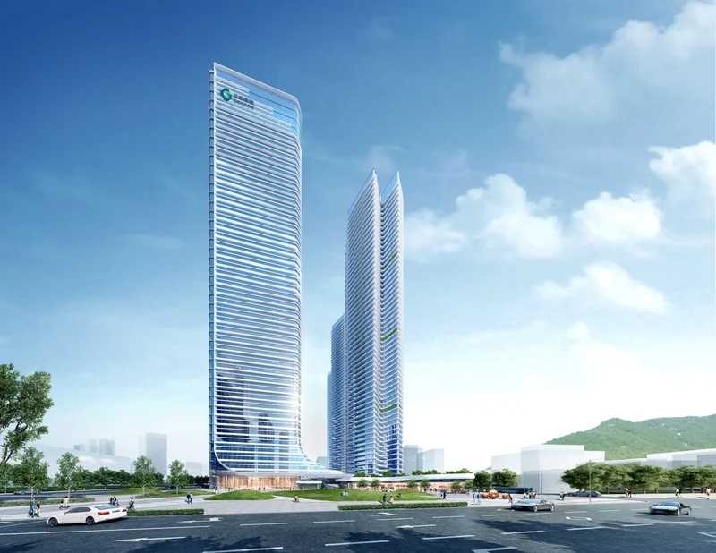
8 张正中龙岗平湖
以不同高度的塔楼和连续裙房组织城市界面，低处的连廊与景观串联步行空间。
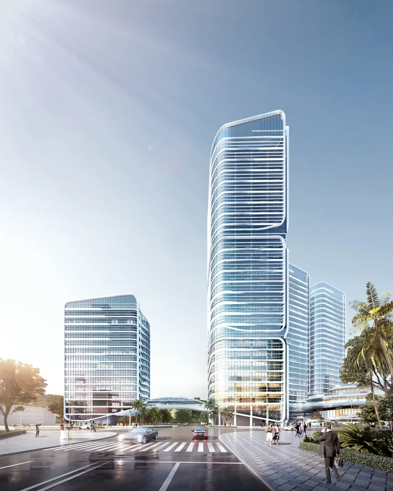
6 张深圳光明正晟达产业园
从园区整体布局走近塔楼与裙房，呈现办公建筑的体量和沿街空间。
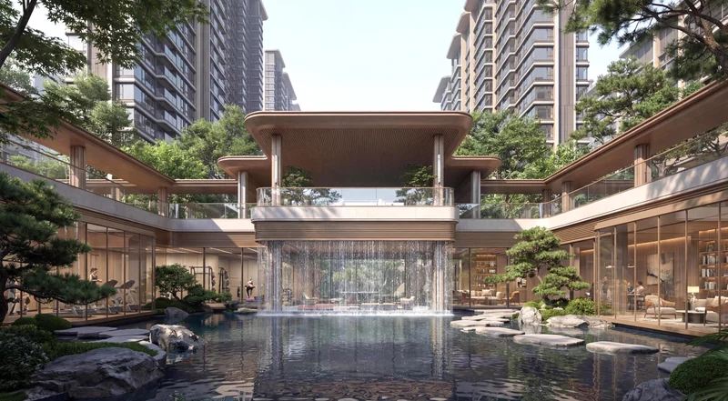
5 张贵港盛世云璟
由入口雨棚、庭院水景和住宅立面构成的图像选辑，关注进入居住空间的过程。
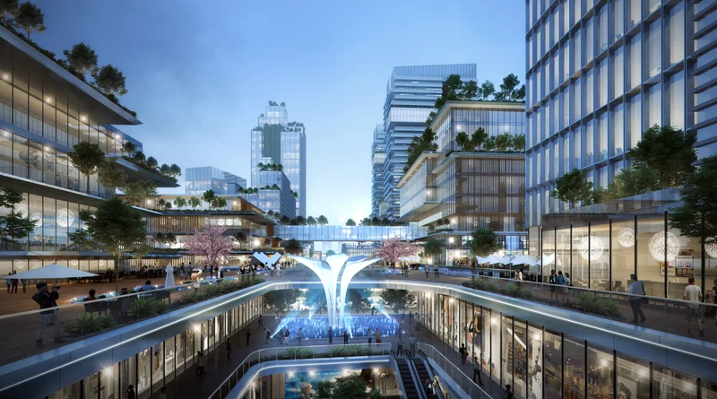
5 张中南沙井沙一产业园
塔楼与低层建筑围绕步行空间展开，选图呈现园区的总体布局与地面尺度。
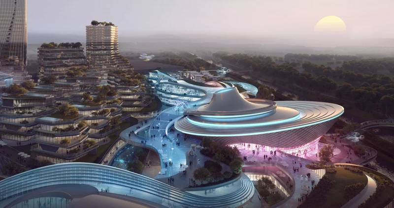
6 张成都志达产业园
流线形体与高层建筑共同构成园区，鸟瞰和地面视角呈现不同的空间关系。
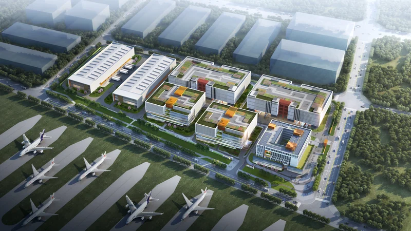
6 张成都空港航空产业园
以重复的建筑单元和开放绿地建立园区秩序，从鸟瞰延伸到沿街立面。
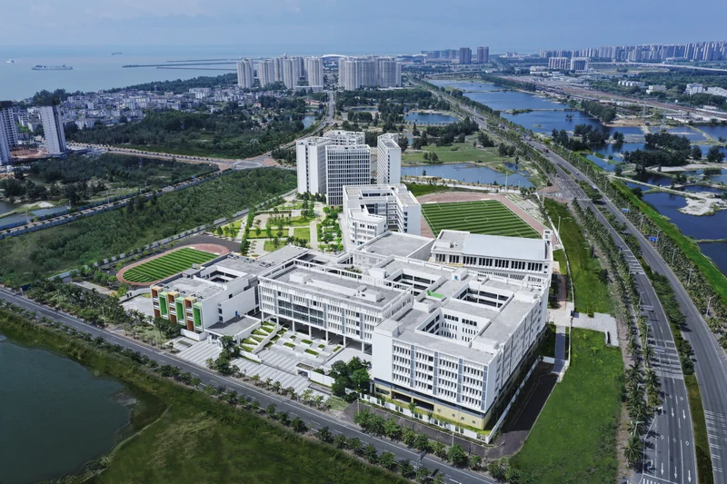
7 张海口海雅国际双语学校
校园建筑、中央庭院和开敞场地的图像选辑，呈现教学空间与室外活动场所的联系。
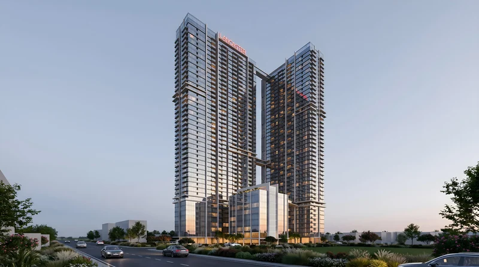
7 张越南 LANCASTER LINCOLN 综合体项目
高层建筑、空中泳池与连廊的多视角表达，探索城市居住中的共享空间。
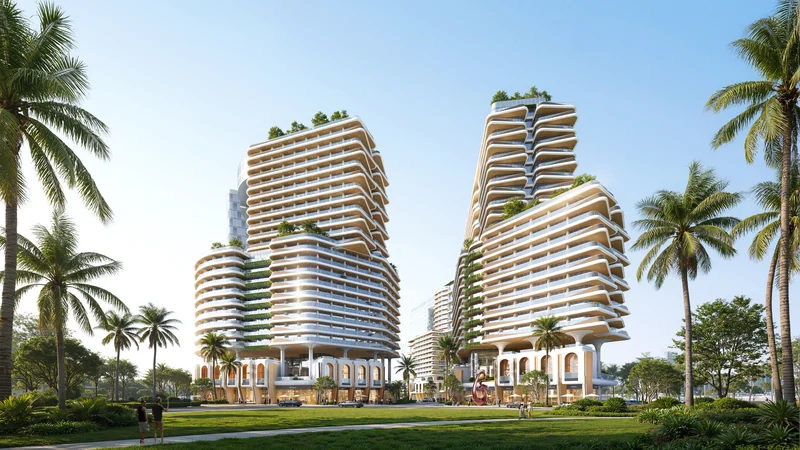
8 张越南平顺翡翠园项目
层叠阳台、棕榈景观与建筑群共同组织度假氛围，呈现不同光线下的体量关系。
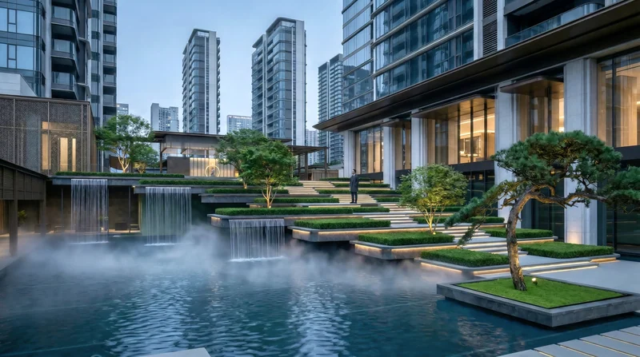
6 张南宁悦恒书院
入口、水庭与连廊串联起住宅之间的公共空间，选图记录从外部进入庭院的观看路径。
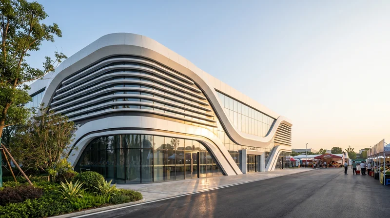
6 张茂名茂南物流集散中心
从园区鸟瞰到近处立面，以连续曲线、玻璃和金属构件建立建筑形态。
竞赛
1 组项目AIGC 图像创作
让想象，停留在一帧。
场景、人物与色彩实验，记录日常创作中的不同视角。
浏览全部 24 幅图像


AIGC 影像
让空间，进入时间。
以建筑的眼光，探索影像的另一种表达。
电脑端可微信扫码，手机端可点击封面打开视频号。
作品展示
当前展示 4 项内容
吾乡永定，最温柔的堡垒
土楼与建造记忆
原片约 2 分 59 秒客从何处来
影像作品
视频号完整版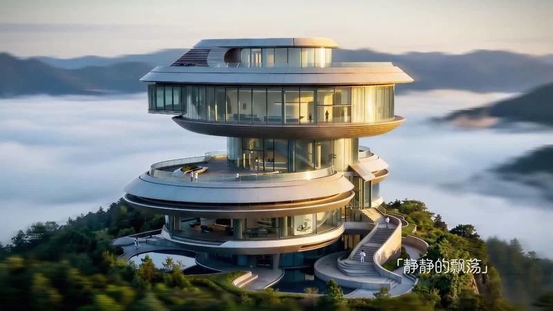
云海艺术馆
云海中的空间想象
原片约 0 分 59 秒从仰望星空，到奔赴星辰
影像作品
视频号完整版
工具与工作流
把创作中的经验，做成可复用的工具。
获奖情况
建筑设计与 AIGC，持续积累的奖项、入围与策展记录。
我是熊飞，Whisper。建筑师，也是 AIGC 创作者。
- 建筑
- 从规划到空间，关注尺度、材料与真实生活。
- 影像
- 用光影讲述故事，重新组织时间与空间。
- AIGC 图像
- 把想象转化为画面，探索色彩、材质与构图的更多可能。
寻找真实的表达，也让想象自由延伸。
- 建筑与工程
- 一级注册建筑师
工程师 - 人工智能与创作
- AIGC 人工智能应用高级工程师
AIGC 内容创作者
活动与交流
让创作，发生在真实的相遇里。
展览、分享与现场记录。
点击照片，查看完整画面。
AIGC ASIA 2026
交流、分享，以及创作者之间的相遇。
东山口主题展
围绕城市记忆，走进展览与现场交流。
阅见海珠
从图像到展览，让创作进入真实空间。